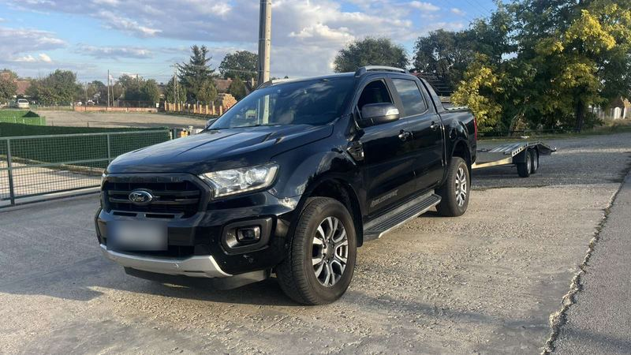
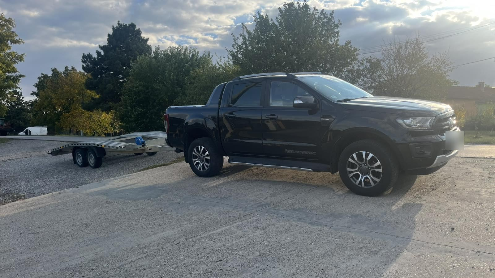
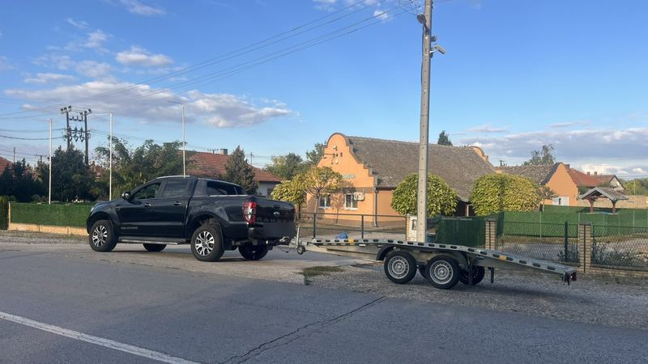
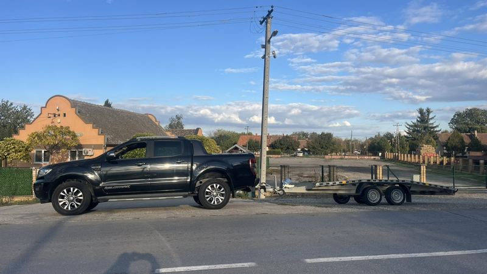
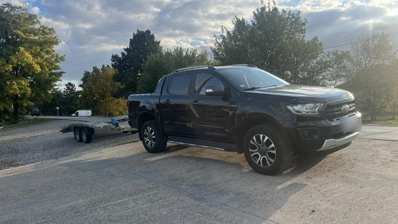
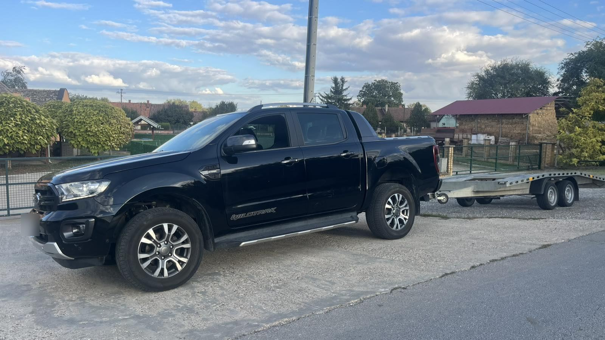

Abschleppdienst & Pannenhilfe
Panne, leere Batterie, Reifenschaden oder ein Auto, das nicht anspringt. Wir kommen zu Ihnen und bringen das Fahrzeug in die Werkstatt oder an Ihr Ziel.

Panne auf der Autobahn in Serbien, Transport in die Werkstatt oder ein in Deutschland gekauftes Auto nach Serbien bringen? Schicken Sie uns Ihren Standort, wir kommen zu Ihnen.
Wir transportieren Pkw, Transporter und leichte Fahrzeuge vor Ort, in ganz Serbien und aus dem Ausland.

Panne, leere Batterie, Reifenschaden oder ein Auto, das nicht anspringt. Wir kommen zu Ihnen und bringen das Fahrzeug in die Werkstatt oder an Ihr Ziel.

Beschädigte Fahrzeuge werden sorgfältig verladen und zur Werkstatt, zum Gutachter oder auf einen sicheren Stellplatz gebracht.

Auto in Deutschland, Österreich oder der EU gekauft? Wir holen es beim Verkäufer ab und liefern es bis vor Ihre Tür in Serbien.

Neu- und Gebrauchtwagen, Oldtimer und Fahrzeuge ohne Zulassung, für Firmen und Privatkunden.
Rufen Sie an oder schreiben Sie per WhatsApp oder Viber. Am schnellsten geht es, wenn Sie gleich Ihren Standort senden.
Nennen Sie uns Fahrzeug und Ziel. Den Preis kennen Sie, bevor wir losfahren.
Wir kommen, verladen das Fahrzeug und bringen es sicher ans Ziel.

Nachts, am Wochenende und an Feiertagen.
Der Preis steht vor der Abfahrt fest.
Ihr Fahrzeug wird sorgfältig verladen und gesichert.
Vor Ort, in ganz Serbien und auf Strecken aus der EU.
Unser Standort ist Srbobran an der Autobahn A1 (E-75) zwischen Novi Sad und Subotica. Von hier sind wir schnell in Novi Sad, Vrbas, Bečej, Temerin und Kula und fahren auf Anfrage überall in Serbien und Europa.
Das hängt vom Standort und vom Verkehr ab. Rufen Sie an oder senden Sie Ihren Standort, dann erhalten Sie sofort eine Einschätzung der Ankunftszeit.
Der Preis hängt von Entfernung, Fahrzeugtyp und Zustand ab. Sie erhalten ein Angebot auf Anfrage und kennen den Preis vor der Abfahrt.
Ja. Unser Abschleppdienst ist 24/7 an jedem Tag des Jahres im Einsatz.
Ja. Wir holen das Fahrzeug beim Verkäufer ab und liefern es an die gewünschte Adresse. Senden Sie uns Fahrzeugdaten und Abholort für ein Angebot.
Genauen Standort, Marke und Modell, ob die Räder rollen und ob ein Schlüssel vorhanden ist. Ein Foto per WhatsApp oder Viber hilft.
Per Nachricht teilen Sie Ihren Standort am einfachsten. Wir antworten auch nachts.